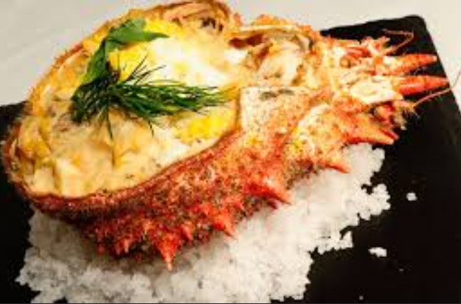
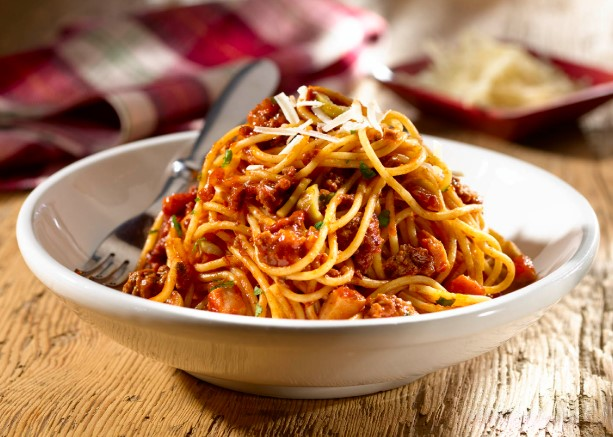
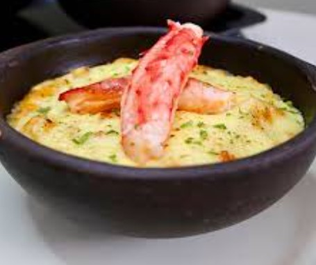
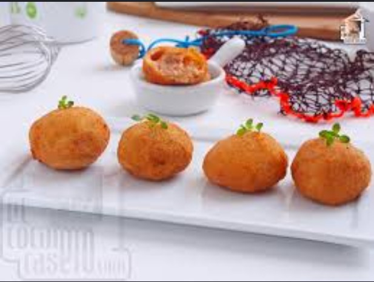

huevos cocidos • palitos de cangrejo • mayonesa
👤 Berta Álvarez

centolla • leche • cebolla • pan
⏱️ 50 min • 👤 Arianne

centolla • palta • cebolla morada • cilantro
⏱️ 30 min • 👤 Jon Michelena

centolla • camarones • mantequilla
⏱️ 2 horas

centolla • gambas • conchas
👥 4 personas

spaghetti • centolla • tomate • ajo
⏱️ 40 min

centolla • pan • queso • leche
👤 Marta Ríos

centolla • mango • palta • lechuga
⏱️ 20 min

arroz • centolla • azafrán • vino blanco
⏱️ 40 min

centolla • leche • harina • huevo
⏱️ 30 min